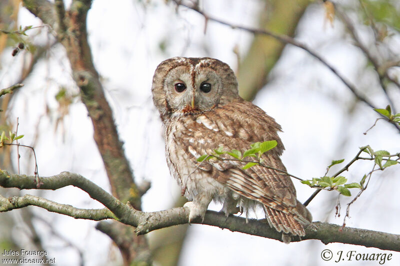
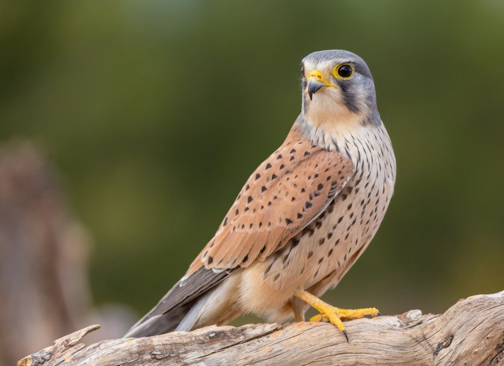
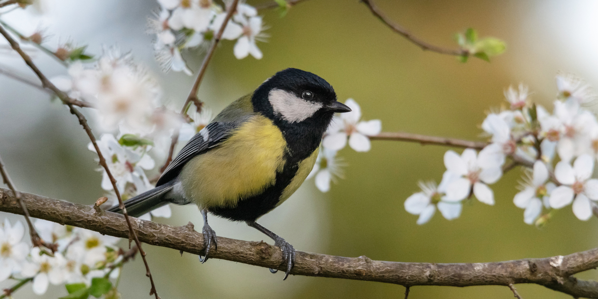
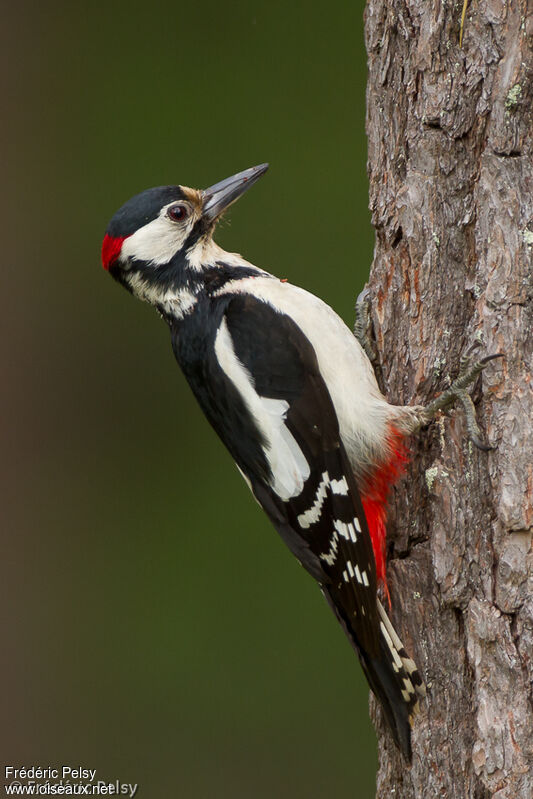
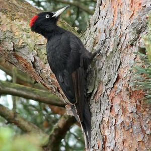
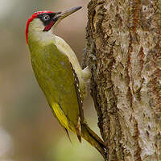
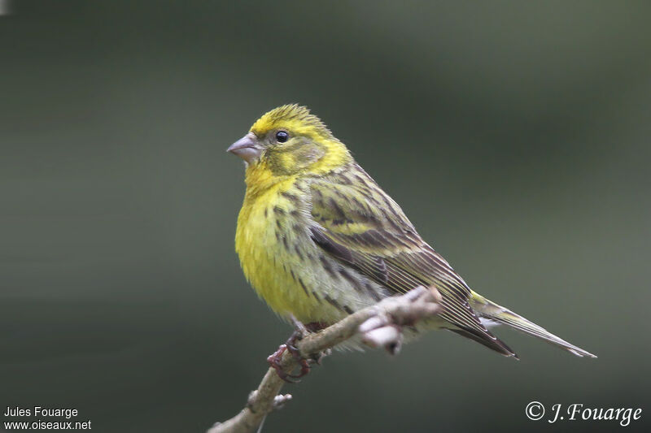
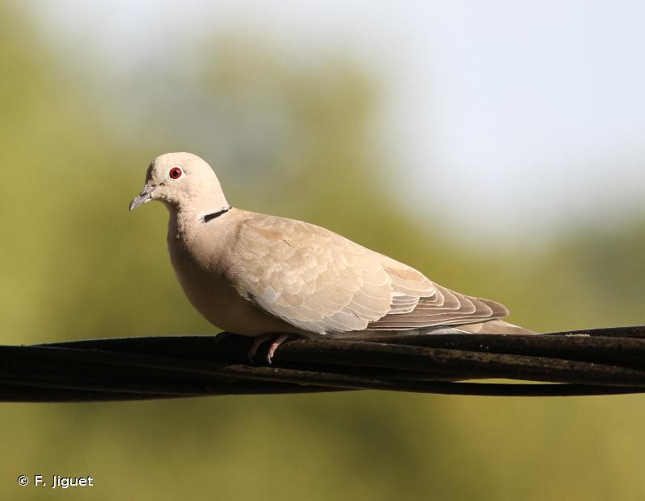

Buse variable
La Buse variable, comme son nom l'indique, a un plumage extrêmement variable. Cela peut aller d'un blanc presque pur à un brun sombre quasi uniforme, avec tous les intermédiaires possibles et imaginables. C'est très déroutant pour un ornithologue débutant. Mais heureusement, dans la majorité des cas, l'oiseau est d'un brun moyen avec des caractéristiques spécifiques que je vais décrire, mais il faut bien avoir en tête que les variantes sont nombreuses. Il est admis que les oiseaux du nord de l'aire sont plus pâles que ceux du sud.
La silhouette est massive, particulièrement chez la femelle, plus grande et plus robuste que le mâle. La pointe des ailes fermées atteint à peu près l'extrêmité de la queue. La tête est assez grosse, faisant paraître le cou engoncé dans les épaules.
Le plumage adulte se caractérise par une relative uniformité des parties supérieures.

Chouette hulotte
La Chouette hulotte est une chouette de taille moyenne (envergure de 95 à 105 cm) inféodée aux milieux forestiers du paléarctique occidental. L'espèce présente deux morphes de plumage, un gris et un roux, comme beaucoup d'autres rapaces nocturnes.
L'adulte de morphe gris a un plumage brun-gris marqué de taches brun sombre et claires qui rompent la continuité et le rendent très cryptique. Une bande blanche ou crème est particulièrement visible au niveau des scapulaires externes. Le dessous est blanc à beige clair, strié et barré plus discrètement de brun. La grosse tête arrondie porte un masque facial pâle à contours arrondis bien développé. Il est coupé en son centre par une ligne sombre qui rejoint le bec. Il présente de légers cercles concentriques autour des gros yeux sombres. Le bec, surmonté par un X blanc est couleur paille.

Faucon crécerelle
Le Faucon crécerelle est un faucon de petite taille au manteau roux des milieux ouverts de l'Ancien Monde. C'est un oiseau svelte au corps fin et à longues ailes étroites et longue queue. D'aspect, il est proche d'autres espèces du genre "Crécerelle" et des confusions sont possibles.
L'espèce est dimorphique. Le mâle adulte, plus petit que la femelle, se reconnaît à son plumage contrasté. La tête est gris cendré sur le dessus et les côtés. Sous l'œil sombre cerclé de jaune, un large trait noirâtre sépare les couvertures auriculaires grises de la gorge crème. La cire du bec est très jaune. Les parties supérieures, d'un roux-châtain assez vif, sont maculées de taches brun-noir. La queue gris clair est barrée de noir à son extrémité de façon très visible. Le gris remonte sur les sus-caudales et le croupion. Les longues rémiges apparaissent noires. Les parties inférieures, crème à la gorge et roussâtres plus bas, sont nettement striées ou maculées de brun noir, stries sur la poitrine, macules plus larges sur les flancs. Les pattes sont très jaunes avec des ongles noirs.
La femelle adulte est globalement plus uniforme. Elle est dépourvue de la couleur grise caractéristique du mâle. Seule la queue des femelles âgées peut grisonner.

Mésange charbonnière
La Mésange charbonnière est une grande mésange, la plus grande de celles auxquelles nous sommes confrontés dans l'ouest du continent. Elle est remarquable par sa tête noire à larges joues blanches. L'œil très sombre est noyé dans ce noir. Le dessus du corps, manteau et dos, est verdâtre avec une zone plus claire sur la nuque. Les ailes et la queue sombres sont d'un gris nettement nuancé de bleu.
Une barre alaire blanche se distingue sur les grandes couvertures alaires. Les parties inférieures sont jaunes mais s'éclaircissent vers la queue.
L'arrière des flancs est gris. Le bas-ventre et les sous-caudales sont blancs avec un trait noir médian sur ces dernières. Un bandeau noir médio-ventral court de la gorge au ventre, large et d'un noir profond chez le mâle adulte, plus restreint et plus irrégulier chez la femelle.

Pic épeiche
Le Pic épeiche est le plus commun et le plus répandu des pics dits bigarrés, au plumage coloré de noir, blanc et rouge.
Le dimorphisme sexuel est faible. Le mâle adulte se distingue à sa zone occipitale rouge cramoisi alors qu'elle est noire chez la femelle.
Les parties supérieures (manteau, dos, croupion et sus-caudales) sont noires. Les ailes noires présentent une large tache blanche sur les épaules, formée par les scapulaires externes et les grandes et moyennes couvertures internes. Toutes les rémiges sont noires et munies de taches blanches sur leur longueur formant barres alaires. Les deux paires de rectrices centrales sont noires et les trois paires externes de plus en plus blanches de l'intérieur vers l'extérieur.
La tête porte une calotte noire entre le front beige roussâtre clair et l'arrière rouge ou noir. Les côtés de la tête et du cou sont blancs, marqués d'un Y noir dont les branches rejoignent respectivement le bec (en une moustache noire), la nuque et la poitrine (la branche inférieure amorçant un bandeau pectoral). Une bride noire joint la nuque au manteau, noir lui aussi.
Les parties inférieures sont blanches, excepté le bas-ventre et les sous-caudales rouge cramoisi.
Le bec, fort et pointu, est noir. Les yeux rouge sombre ressortent bien dans la zone lorale blanche. Les fortes pattes griffues sont grises.

Pic noir
Avec une longueur de 45 à 50 cm, le Pic noir est l'un des plus grands pics au monde. Il est aisément reconnaissable à la couleur noire de son plumage. La seule partie vivement colorée chez l'adulte est la calotte. Le mâle l'a entièrement rouge vif tandis que la femelle n'a ce rouge que sur le tiers postérieur. Elle est légèrement érectile. Le bec est couleur ivoire à pointe sombre. L'iris de l'œil est blanc. Les pattes sont claires, un peu de la couleur du bec.
Le juvénile est d'un gris de suie. Son bec est rosâtre et son iris gris.

Pic vert
Le Pic vert est un pic d'assez grande taille, au plumage à dominante verte qui lui a donné son nom. C'est ce qu'on remarque en premier quand on est confronté à cette espèce. Ensuite, c'est le rouge vif de la tête qui saute aux yeux.
Le vert nettement nuancé de jaune couvre le dessus du corps, de la nuque à la queue, ainsi que les couvertures alaires. Le croupion et les sus-caudales apparaissent nettement plus jaunes. Les rémiges et les rectrices, d'un brun grisâtre, sont nettement barrées de noirâtre. Les rémiges secondaires et tertiaires sont largement ourlées de vert-jaune.
Les parties inférieures sont d'un blanc grisâtre avec une nuance jaune qui augmente en intensité de l'avant vers l'arrière. Ainsi, la gorge et les joues sont blanchâtres tandis que le bas ventre est nettement jaune, mais il y a des variations individuelles. Les plumes de l'arrière des flancs et les sous-caudales, jaunâtres et bordées de noirâtre, donnent un aspect écailleux.
La tête tricolore, rouge, noir et blanc, est remarquable. Les deux sexes possèdent une calotte rouge vif qui gagne la nuque, une couleur noire sur les lores, le pourtour des yeux et les moustaches, enfin la gorge et les parotiques blanchâtres. L'iris blanc ressort bien sur la joue noire. Le bec est jaunâtre ou corne, à pointe sombre.

Pie bavarde
Il n'est nul besoin de décrire la Pie bavarde qui se reconnaît au premier coup d'œil à sa silhouette et à son plumage. Il suffit de regarder les photos ci-contre. Tout le monde peut mettre un nom immédiatement sur cet oiseau à longue queue caractéristique. D'ailleurs son nom fait référence quand on parle d'un animal noir et blanc, par exemple un cheval pie.
Inutile donc de partir dans une longue description. Les images suffisent. Notons simplement les caractéristiques "corvidé" à savoir la grande taille, le bec et les pattes robustes.
Les sexes sont semblables. À bonne lumière, le noir du plumage adulte présente des reflets bleus, indigo, violets, vert-bronze du plus bel effet.
Le juvénile a une queue plus courte, le noir du plumage couleur suie avec des reflets atténués, le blanc très légèrement teinté de roussâtre et le tour de l'œil clair faisant ressortir ce dernier.
Actuellement, 6 sous-espèces sont reconnues. Elles diffèrent légèrement par la taille et les proportions respectives du blanc et du noir dans le plumage, essentiellement au niveau des primaires et du croupion. Auparavant, elles étaient plus nombreuses, mais 4 taxons ont été élevés au rang d'espèce.

Serin cini
Le Serin cini est le plus petit des fringilles européens. Il possède une grosse tête munie d'un bec épais, un corps assez compact et une queue plutôt courte.
L'espèce est monotypique.
Le mâle adulte se reconnaît au jaune vif de son plumage, surtout apparent à l'avant du corps, sur la tête et la poitrine. Le jaune du croupion n'apparaît vraiment qu'en vol. Le patron de tête est typique avec du jaune vif sur le front, le tour de l'oreille et la gorge, l'arrière de la calotte, la nuque, les parotiques, les lores et les traits malaires étant plus ou moins sombres, d'un gris beige nuancé d'olive. Le petit bec obtus, rosé à brunâtre, accentue l'impression "grosse tête".
Souvent, le petit œil sombre est souligné d'un croissant blanchâtre et l'espace mustacien réduit à une tache jaune. Le manteau et les scapulaires sont gris-beige, nettement striés en long de brun. Les plumes des ailes et de la queue sont brun noirâtre, mais avec de nets liserés ou ourlets clairs qui en rompent l'uniformité. Les extrémités claires des grandes couvertures et des couvertures moyennes forment deux barres alaires, blanchâtres à jaunes suivant les individus. Les flancs sont blancs, avec des stries noirâtres pouvant s'agencer en lignes longitudinales. Toutes les régions du corps qui ne sont pas jaune vif peuvent être ou non lavées de jaune à des degrés divers suivant les individus. Les petites pattes sont rosâtres.
La femelle adulte est semblable au mâle, mais beaucoup plus terne, sans le jaune vif du plumage de ce dernier. La partie du corps la plus jaune est le croupion, mais il est masqué au posé. En revanche en vol, il devient diagnostique de l'espèce. Le patron de tête est celui du mâle, mais atténué. L'ensemble du plumage peut être ou non lavé de jaune verdâtre. La femelle est aussi nettement striée, dessus comme dessous.

Tourterelle turque
La Tourterelle turque est un petit pigeon élancé, vivant proche de l'Homme et de ses activités. Avec sa queue assez longue et ses ailes relativement courtes et arrondies, elle peut être prise au vol pour un épervier, ce qui peut mettre en émoi provisoire les petits passereaux lorsqu'elle déboule sans prévenir.
Elle a un plumage clair. Les parties supérieures (corps, couvertures alaires et rectrices centrales) sont d'un brun-chamois clair, paraissant uniforme de loin. Mais de près, on voit que certaines tectrices ont un rachis assombri et sont légèrement ourlées de pâle. Les rémiges sont brun sombre et des plumes gris clair sont visibles vers le poignet. Les parties inférieures sont sable clair. En période nuptiale, la tête, le cou et la corps se teintent légèrement de rose. Un net demi-collier noir se dessine à l'arrière du cou, parfois souligné de blanc. Les rectrices, centrales exceptées, sont bicolores, noires sur la moitié proximale, blanches sur la partie distale et cela se voit très bien en vol comme se voit très bien le dessous des ailes clair. L'iris est rouge-sang, l'œil cerclé de blanc et le bec noir. Les pattes sont rosâtres.
Le juvénile a les tectrices supérieures nettement ourlées de chamois. Le demi-collier est absent. L'iris est brun et les pattes brun rougeâtre.